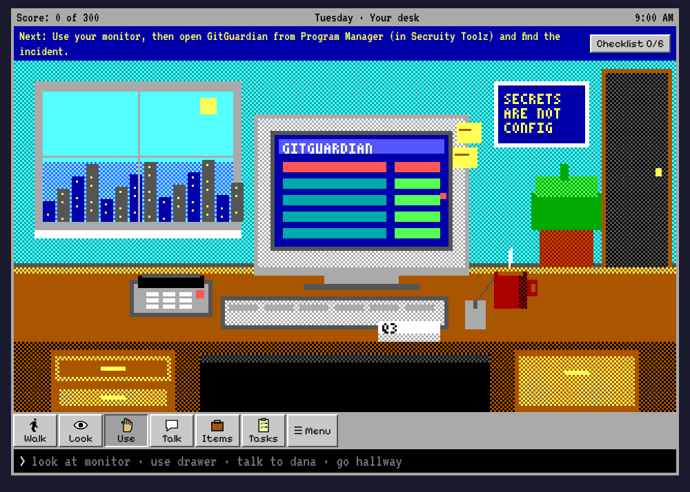
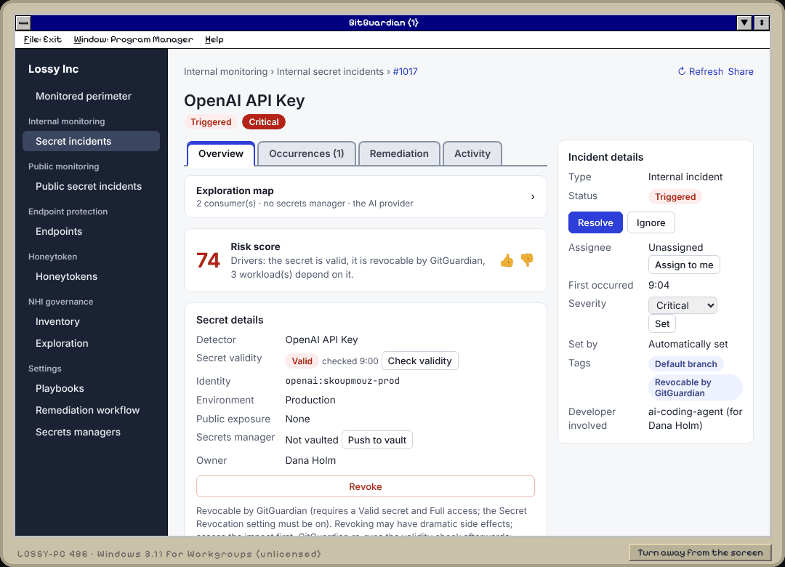
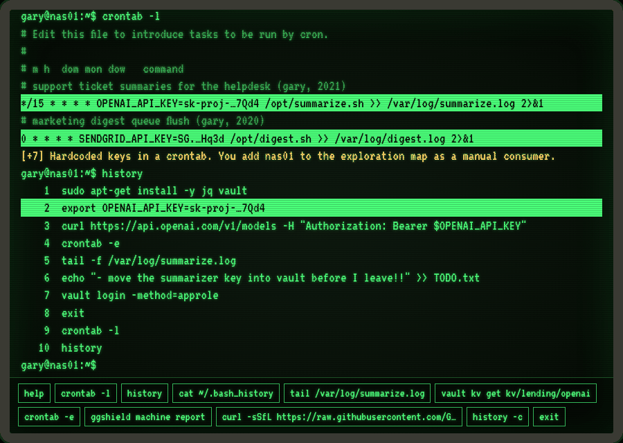

Tuesday
The Agent Committed It
An AI coding agent commits a valid OpenAI key into .mcp.json and is about to publish a public repro. Find every consumer, vault it, rotate, revoke, and keep the noon payouts running.
A secrets-security adventure
You're the newest person on the security team at a company that has changed its name three times this year. It's 9:00 AM on a Tuesday. An AI coding agent just pushed an OpenAI key to GitHub, and four thousand loans go out at noon.
Free. No account, no install, no backend. About 30 minutes a day, 3 days, 1 bonus level.

Leaked secrets are how most breaches start now. A key gets pasted into a config file, an AI agent helpfully commits it, a worm in a dependency scrapes it from CI, or an infostealer lifts it off a laptop. Detecting the leak is the easy part. The hard part is what comes next, while the clock runs: who uses this key, what breaks if I revoke it, and has anyone already used it?
Lossy Inc is a game about that part. You play incident response from the first alert to the all-clear, using simulated versions of the real tools: GitGuardian's incident page, remediation workflow, exploration map, Endpoint protection and honeytokens, plus a vault, a CI system, provider consoles, and a couple of forgotten Linux boxes with keys in their crontabs.
It's built like a 1990s Sierra adventure on purpose. Those games punished you for skipping a step, then told you exactly which step you skipped. That is also how incidents work. Revoke too early and the noon payout fails. Revoke too late and someone else is spending your money. Each death screen explains what GitGuardian's workflow would have told you, and Restore takes you back to try again.
Everything is simulated. The whole game is one HTML file. No real system is contacted, no real credential exists, and every command you type (ggshield, vault, crontab) is scripted inside the page. The company, its six business lines and its people are fictional.
— README.TXT, found in the left desk drawer


Pick a verb, then click something in the room. Or type, the old way: look monitor, talk ravi, use drawer, go hallway.
LR-XXXX-XXXX). Share one, type it on another device, or type anything and see what game you get.An AI coding agent commits a valid OpenAI key into .mcp.json and is about to publish a public repro. Find every consumer, vault it, rotate, revoke, and keep the noon payouts running.
A poisoned npm package runs in CI and publishes a GitHub token and a SendGrid key. Stolen credentials mean contain first, revoke now, restore after.
A Google Cloud key from a company you bought turns up in a public Docker image. Nobody owns it, nobody has admin, and nobody remembers the VM that uses it.
A honeytoken fires on a developer's laptop. The damage is done. The only way to win is the incident playbook in your desk drawer, every step, in order.
12:00 PM.
The noon disbursement run asked repayments-svc for its go-ahead and got a 401 from the AI provider. Four thousand borrowers didn't get their loans today. The COO would like a word. Several, actually.
Assess before acting. repayments-svc used this key. Move consumers to the vault, put the new key there, then revoke the old one.
Sierra adventures have a dedicated speedrunning scene: people who know every room, every dead end and every death, and route around all of them. Lossy Inc borrows their rules. The game clock only moves when you act, so in-game time is a fair race on any device.
Find the community, their routes and their leaderboards at the King's Quest series on speedrun.com, home to runs of the Sierra classics this game imitates.
| Category | Goal | Timed by |
|---|---|---|
| Tuesday Any% | Tell the COO it's handled, by any route that doesn't die. | In-game clock at the all-clear |
| Week 300 | All three days, full score, no late fixes. | In-game clock summed over 3 days |
| ULTIMATE by the book | Patient Zero, every playbook step in order. | In-game clock at containment |
| Death% | See every death screen in one week. | Real time |
Post your run with the final save code from Menu › Save code, so anyone can load your end state and check it.
Put it on a projector and let the room argue over each click, or hand everyone the link and compare scores at the end. The facilitator guide in the repository has a clean path through each level, the traps and what each death teaches, and where every simulated screen comes from in GitGuardian's documentation.